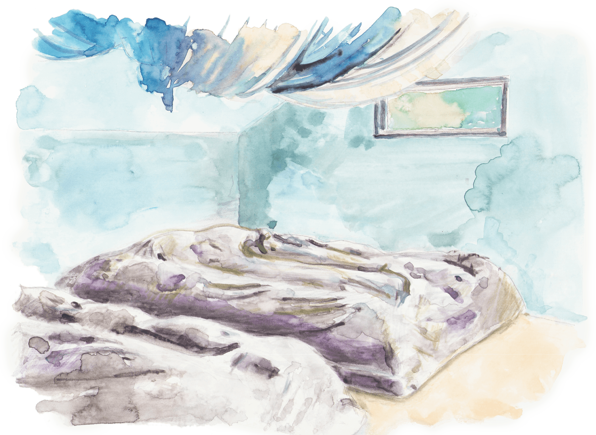
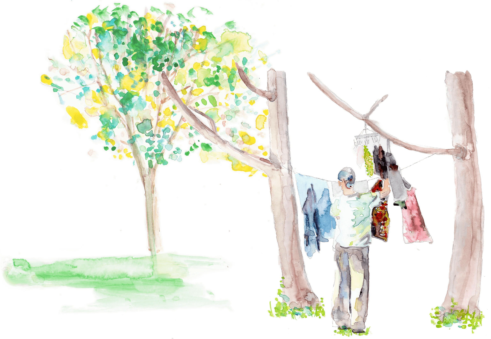

Stay
- Blue Villageに泊まる -
社会の中で身に纏っている
たくさんのものを一度脱ぎ捨てて、
自分と、そして自然と、
再び出会い、そして繋がる体験を。
そして、そこから起こること、
はじまること、そして変わらないもの。
じっくりと感じて、味わってほしい。
BlueVillageに宿泊のご希望の場合は、手づくりのオフグリット小屋”karip”に
泊まっていただくか、キャンプインすることができます。
Karip について
Karipとは、アイヌ語で「輪」や「つながり」、「ご縁」という意味です。
「想いや意識で繋がる”輪”や”縁”を大切にしたい」「自分自身との繋がりやルーツに触れてほしい」
そんな想いを込めて、Karipと呼ぶことにしました。
母屋から150m程離れた完全オフグリット、手作りの小屋です。
- お部屋
- 12畳＋ロフト(寝室）
定員：大人2名/ 大人2名＋子ども1名
- 設備
- 電気(ソーラー発電)、水道(湧き水)、コンポストトイレ(屋外)、一口ガスコンロ、やかん、コップ、包丁やまな板などの調理器具、クーラーボックス Wi-Fiは母屋でご利用いただけます。
キャンプインについて
Blue Villageは現在約1万坪の敷地があります。
その敷地の中のキャンプサイトにテントを張って、大地に一番近いところで眠り、
鳥の声や水の音、太陽の光で目覚める心地よさを体験して頂けます。
- テント
- テントは2~4名用のテントのご用意がありますので、レンタルして頂けます。（数に限りがありますので事前にお申し込みください。）
もちろん持ち込みも可能です。
- 寝具
- 夏用の寝袋はいくつかご用意がありますが、5月及び9月以降は朝晩冷え込みますので、暖かい寝袋などの装備をご持参ください。
- 設備
- コンポストトイレ、水場、バーベキューコンロ、ソーラーライト（数個）、クーラーボックス（常設）、包丁やまな板などの調理器具
その他
- 持ち物
- マイ食器一式、長袖の上下、寒い時の上着、ヘッドライト、歯ブラシ、バスタオルなど。
- お食事
- 畑で採れたものや、その季節の旬の食材を使って、一緒に作ったり、お外で食べたり、その時間にベストな「食卓」を一緒に囲みましょう。
- お風呂
- 車で約10分の洞爺湖温泉街で温泉をご利用いただけます。(1回約500円。ランドリー有り。)
価格について
Blue Villageの滞在には「決められた価格」がありません。滞在を体験した後に、あなたが自由に決めることができます。
お金や、もの、体験の価値は、人によっても状況によっても違うものであり、「あなたにとっての価値はあなたの中にある。」ということを、大切なメッセージとして伝えられたらと思っているからです。
ここでの体験は、自然が恵んでくれたもの、この場を作るためにサポートしてくれた人たちの力、あなたより前に誰かが渡してくれたお金とエネルギーによって生まれています。
あなたが渡してくれたお金は感謝の気持ちと共に受け取り、Blue Villageの場がより豊かに循環するエネルギーとして、未来へと繋げていきます。